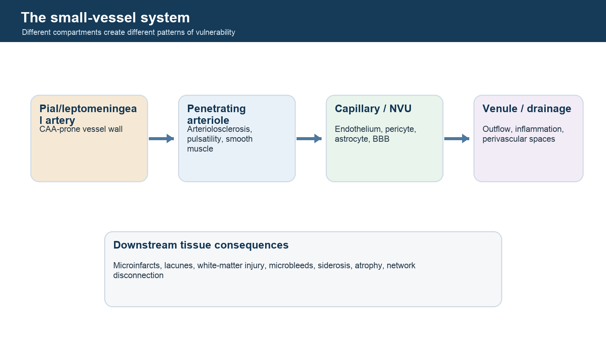

Evidence, uncertainty, and decisive experiments
Small vessels.
Big questions.
A rigorous map of what is known—and still unresolved—about cerebral amyloid angiopathy, brain arteriolosclerosis, and mixed cerebral small vessel disease.

Choose your route
One field, three ways in
The atlas changes its starting point depending on whether you are learning concepts, evaluating a diagnostic claim, or designing a study.
Build deep foundations
Move from vessel anatomy and tissue injury to imaging, pathology, CAA, arteriolosclerosis, and mixed disease.
Follow the curriculum → PATH 02Audit a diagnostic claim
Separate repeatability, biological validity, diagnostic accuracy, transportability, and clinical utility.
Compare profiles → PATH 03Find the missing piece
Open critical gaps with a current synthesis, unresolved evidence element, and potentially decisive design.
See critical gaps →Inference discipline
A marker is not automatically a diagnosis
The atlas preserves the difference between seeing a finding, measuring it reliably, connecting it to biology, and proving that it changes patient-level decisions.
Observation
A lesion, signal, histologic feature, or physiological measurement is detected.
Association
The observation varies with disease, pathology, or outcome in a defined sample.
Validation
Reliability, reference-standard accuracy, and external transportability are demonstrated.
Utility
The information improves a decision or outcome beyond what was already available.
Important clinical boundary
This atlas is for research and education. It does not diagnose individual patients, replace clinical judgment, or convert radiology-report terms into pathology-confirmed disease.